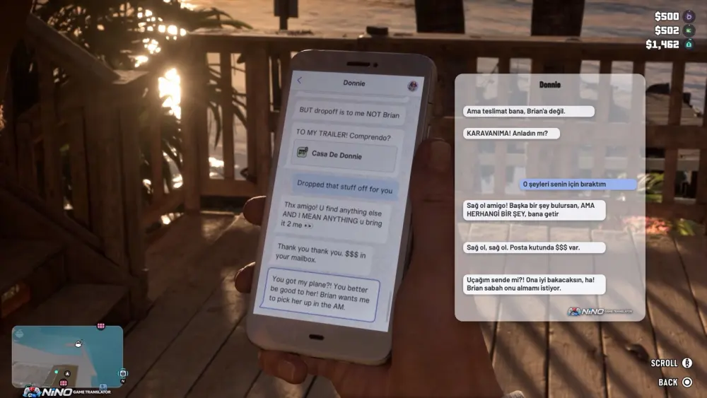
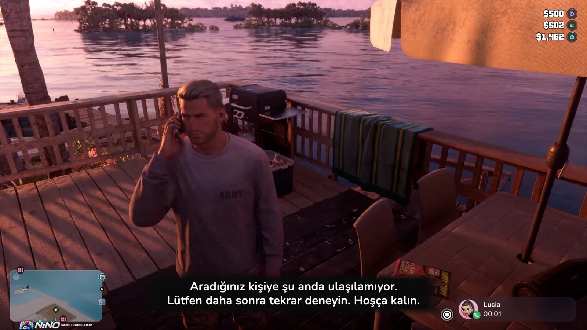
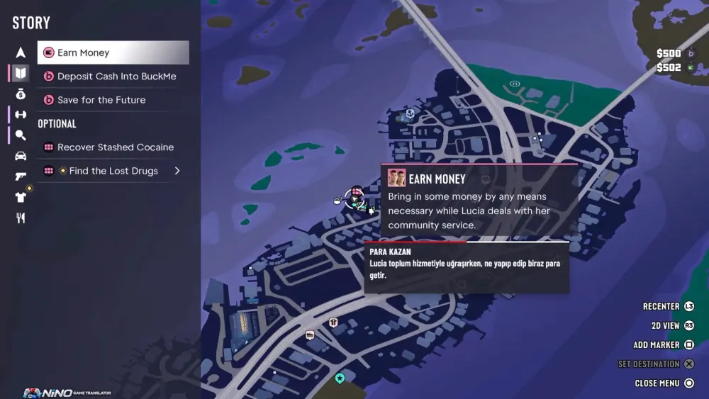
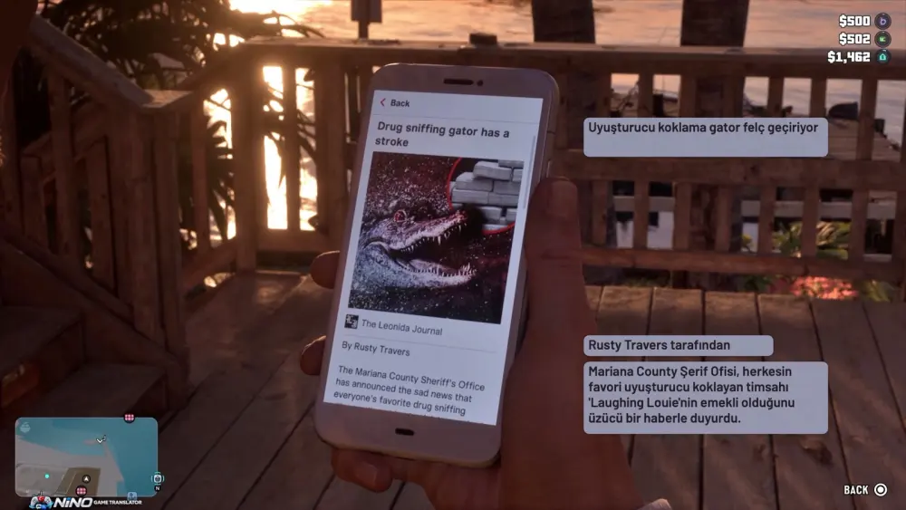
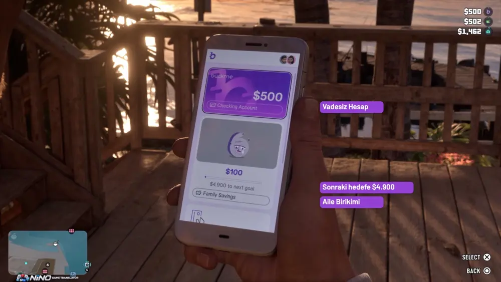
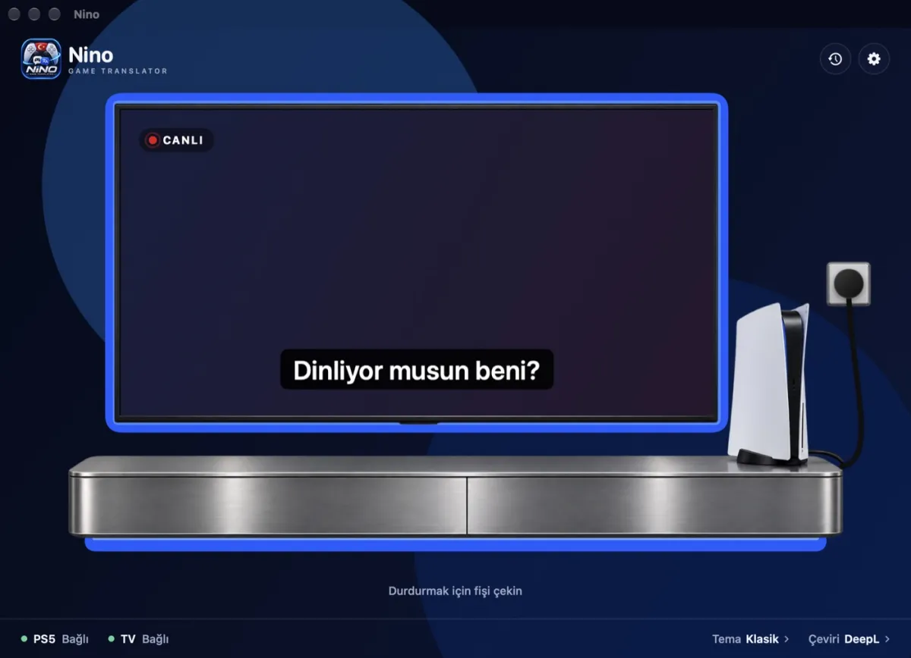
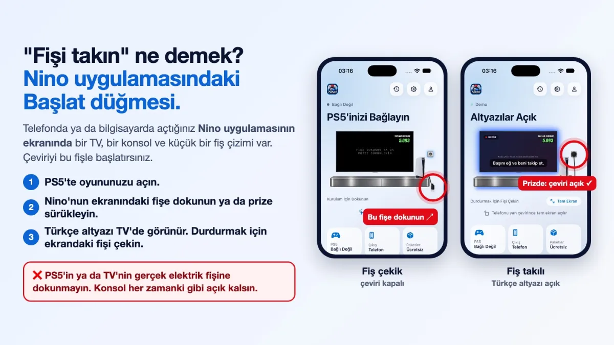

Telefon mesajları
Gelen ve giden mesajlar, gönderenin adıyla, kendi balonlarında.
Nino Game Translator
Nino, PS5 ve Xbox oyunlarındaki İngilizce yazıyı anında çevirir ve TV'nizde, oyunun tam üstünde gösterir. Oyunu her zamanki gibi kendi kolunuzla oynarsınız.

Konuşmalar, oyundaki telefon, haritadaki görevler ve menüler. Türkçesi her yazının kendi yerinde çıkar. Uygulama, Türkçe başta olmak üzere 12 dilde kullanılabilir.

Gelen ve giden mesajlar, gönderenin adıyla, kendi balonlarında.

Görev kartının Türkçesi kartın hemen altında; İngilizcenin üstünü örtmez.

Başlıklar ve yazılar, uygulamanın kendi renkleriyle.

Hesap adları, düğmeler ve seçenekler Türkçe; tutarlar olduğu gibi kalır.
Telefon ve harita çevirisi şimdilik seçili oyunlarda (ör. GTA 6) çalışır.
Nino'yu bir cihaza kurmanız yeter: Mac, Windows ya da telefon. TV uygulamasını o cihaz TV'ye kendisi kurar.
İlk açılışta konsolunuzu seçin: PS5 ya da Xbox.
PS5'te ikinci, ücretsiz bir PSN hesabıyla giriş yapıp PS5'teki 8 haneli kodu yazarsınız. Sonra TV'nizi seçersiniz; Nino TV uygulamasını kurar.
Nino'nun ekranındaki çizilmiş fişe dokunun ya da onu prize sürükleyin. Türkçe altyazı TV'de, oyunun üstünde belirir. Sonraki seferlerde yalnız bu adım yeter.
Dikkat: "Fiş", Nino uygulamasının ekranındaki çeviriyi başlatan düğmedir. PS5'in ya da TV'nin gerçek elektrik fişine dokunmayın.


Nino oyunu Remote Play ile izler. PS5, oynadığınız hesapla aynı anda Remote Play açtırmaz. Oyunu yine kendi hesabınızla oynarsınız; PS Plus gerekmez.
Mac ya da Windows görüntüyü karttan alır. Remote Play ve ikinci hesap gerekmez.
Kendi Microsoft hesabınız yeter; ikinci hesap gerekmez. Xbox desteği deneyseldir.
Hepsi ücretsiz. Mac, Windows ve Android'deki Nino sonraki güncellemeleri kendisi yükler.
Android 8 ve sonrası
APK'yı indir ›Google Play testine katılmak için Kurulum bölümüne bakın.
iOS 17 ve sonrası
TestFlight'tan yükle ›Davet kodu gerekmez; ayrıntı Kurulum bölümünde.
Bütün dosyalar ve sürüm notları: GitHub › Sürümler
Bir kez yapılır; birkaç dakika sürer. Sonrası yalnız oyunu açıp fişi takmak.
Adım adım anlatan kısa video çok yakında burada.
Nino şimdilik Apple'ın test uygulaması TestFlight üzerinden dağıtılıyor. Bu bağlantıyı iPhone'da açın: önce TestFlight'ı App Store'dan yükleyin, sonra bağlantıdaki "Kabul et" ve "Yükle"ye dokunun.
Davet kodu ya da e-posta daveti gerekmez. Bağlantı herkese açıktır; kod soran bir ekran çıkmaz.
Play sürümü şimdilik kapalı testte. Önce nino-test grubuna katılın, sonra test sayfasından "Test kullanıcısı ol"a dokunun.
Katıldıktan sonra Nino'nun Play'de görünmesi 1–2 saat sürebilir. Hemen çıkmazsa bekleyip Play Store'da yeniden arayın. Beklemek istemezseniz APK'yı Sürümler sayfasından indirebilirsiniz.
Sebebi, TV'deki eski Nino'nun başka bir imzayla kurulmuş olması. Android, farklı imzalı bir uygulamanın üstüne kurulum yapmaz. Çözüm: TV'de Ayarlar › Uygulamalar › Nino › Kaldır, sonra yeni dosyayı yeniden kurun.
TV uygulamasını Mac ya da Windows'taki Nino kuruyorsa bununla uğraşmazsınız: eski kopyayı kurmadan önce kendisi kaldırır. Telefondaki ve iPhone'daki Nino bu durumu fark eder ve eski kopyayı kaldırmanızı ister.
TV uygulamasını bilgisayardaki ya da telefondaki Nino kurar. Sizin işiniz TV'de bir kez geliştirici modunu açmak.
| Ekran | Durum | Kurulum için |
|---|---|---|
| Android TV / Google TV TCL, iFFALCON, Sony, Xiaomi, Toshiba, Grundig, Arçelik, Beko ve diğerleri; Hisense, Philips ve Vestel'in yalnız Android TV / Google TV modelleri; Android TV kutuları (ör. Google TV'li Chromecast) | Denendi | USB hata ayıklamayı bir kez açın |
| Samsung TV ve akıllı monitör Tizen, 2016 ve sonrası | Deneysel | Geliştirici modunu bir kez açın |
| LG TV webOS | Deneysel | Geliştirici modunu bir kez açın |
| Mac ya da PC ekranı | Çalışır | Altyazı Nino'nun penceresinde, oyunun üstünde görünür |
| Monitör akıllı olmayan TV dahil | Çalışır | PS5'i HDMI kartla bilgisayara bağlayın ya da oyunu bilgisayar ekranında oynayın |
| Sistem | Durum | Ne yapabilirsiniz |
|---|---|---|
| Vidaa çoğu Hisense TV | Çalışmaz | Bu sistemlere başka uygulama kurulamıyor, Nino'nun TV uygulaması da kurulamaz. TV'ye bir Android TV kutusu takın ya da altyazıyı Mac/PC ekranında gösterin. |
| TiVo OS | Çalışmaz | |
| Titan OS yeni Philips TV'ler | Çalışmaz | |
| Axen | Çalışmaz | |
| Eski Vestel Android olmayan modeller | Çalışmaz | |
| Android olmayan TV kutuları | Çalışmaz |
Konsol, Nino'nun çalıştığı cihaz ve TV aynı Wi-Fi ağında olmalı.
Nino hesap açtırmaz, reklam göstermez, sizi izlemez. Yazı tanıma ve ücretsiz çeviri cihazınızda yapılır; oyun görüntüsü kaydedilmez. Sunucuya ne gittiğini tek tek yazdık.
Nino'nun bütün kaynak kodu GNU AGPL-3.0 lisansıyla herkese açık. Hata bildirimi ve öneriler GitHub'da.
Nino reads the English text of PS5 and Xbox games and shows a translation on your TV, right on top of the game. The app comes in 12 languages, Turkish first.
A Mac, Windows PC or phone watches the game through Remote Play (PS5, with a second free PSN account) or the Xbox home stream, reads the text, translates it and sends it to the Nino app on your TV. You keep playing on your TV with your own controller.
TVs: works on Android TV / Google TV (including Android TV boxes), Samsung Tizen, LG webOS, a Mac or PC screen, and any monitor (through an HDMI capture card or the computer screen). It does not work on Vidaa (most Hisense TVs), TiVo OS, Titan OS (newer Philips TVs), Axen, older non-Android Vestel TVs or non-Android TV boxes, because they cannot install other apps.
Android TV, manual install: if the TV says "Package invalid" or "App not installed", an older Nino on the TV was signed with a different key. Remove it (Settings › Apps › Nino › Uninstall) and install again. Nino on Mac or Windows does this for you; the phone apps detect it and ask you to remove the old copy.
iPhone: the TestFlight link opens without an invite code. Android: after joining the Google Play test, Nino can take 1–2 hours to show up in Play.
Open source under AGPL-3.0, and free. No ads, no subscription, no account.
Download from GitHub Releases › Privacy policy › Source code ›